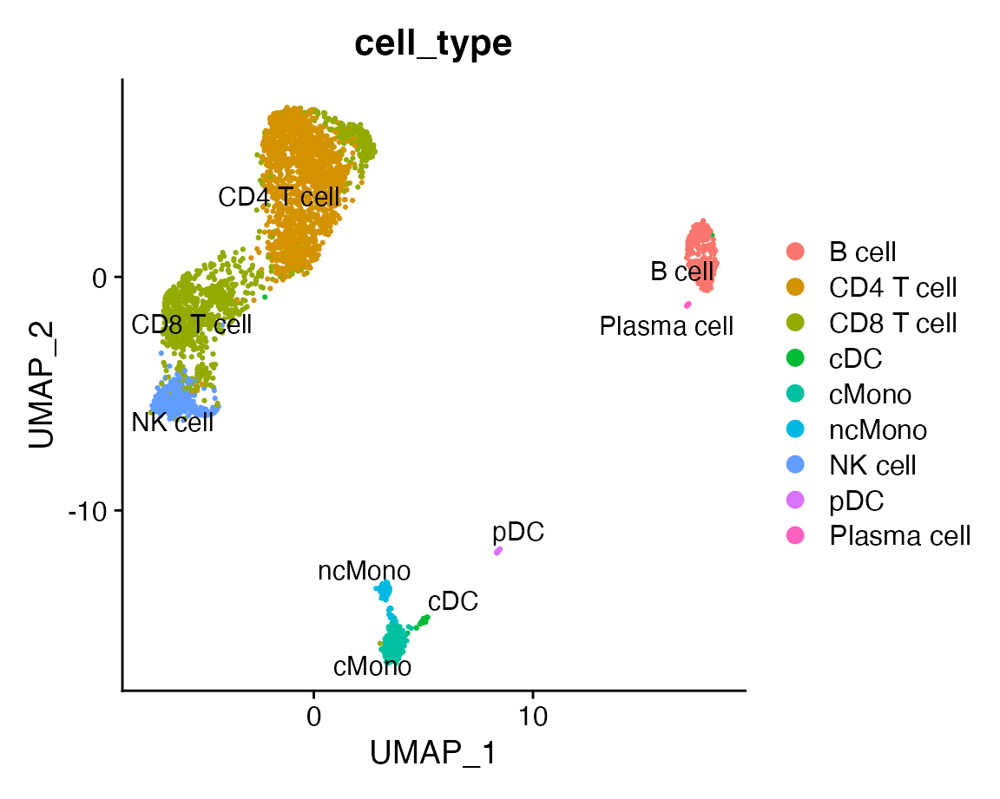
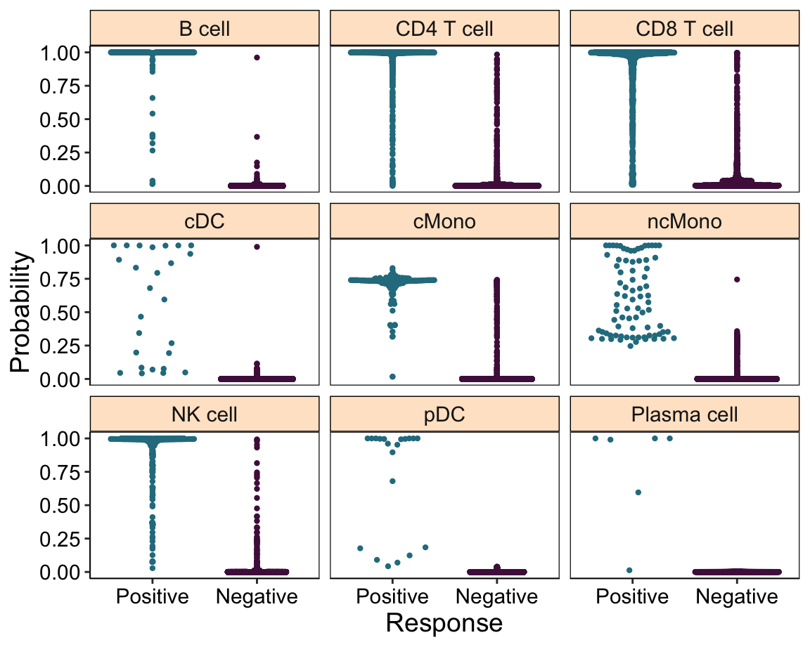
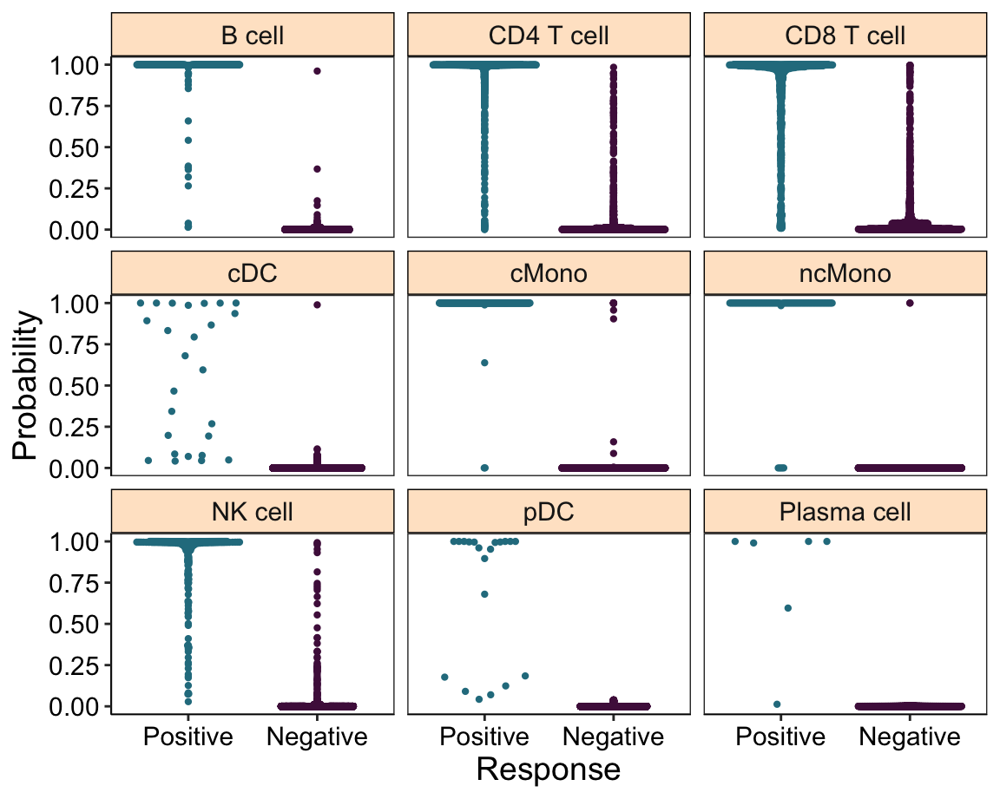
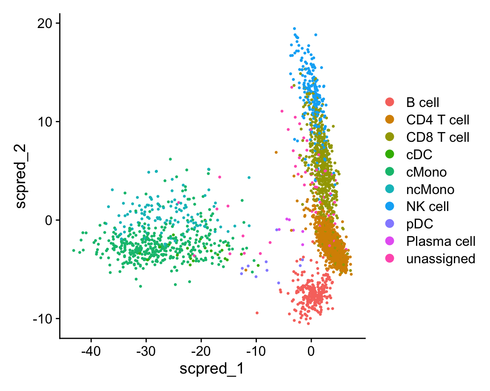
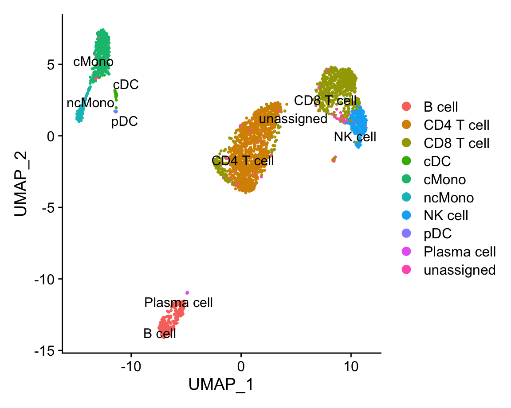
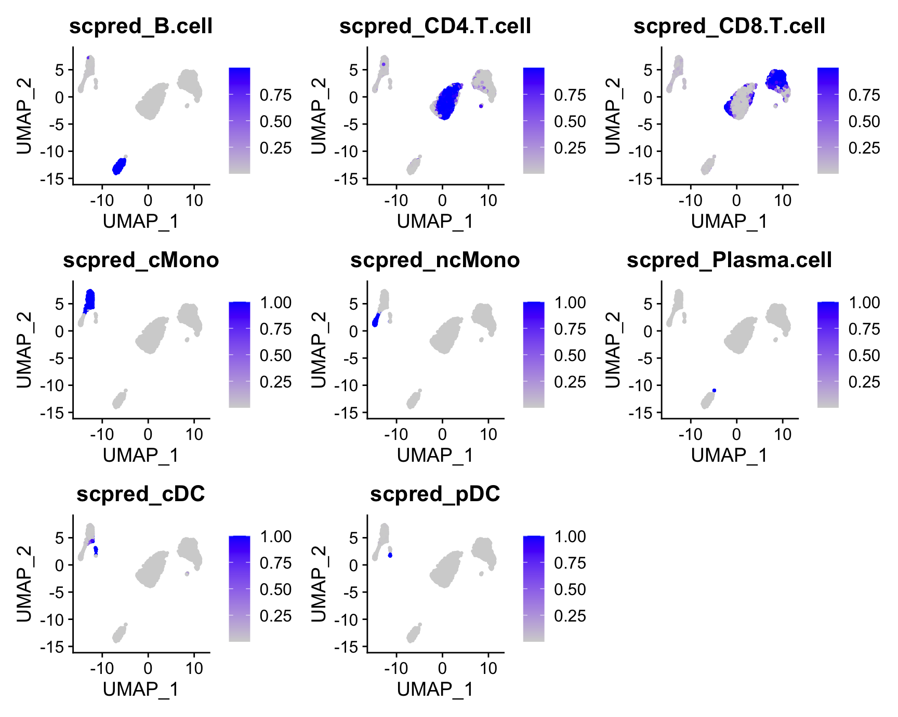

Introduction to scPred
Jose Alquicira Hernandez
2021-07-12
Source:vignettes/introduction.Rmd
introduction.RmdSummary
scPred is a general method to classify cells based on a low-dimensional representation of gene expression (e.g. PCA).
For more details see our paper in Genome Biology:
scPred: accurate supervised method for cell-type classification from single-cell RNA-seq data
Application of scPred
First, we’ll load the scPred package and Seurat.
We will work with Peripheral Mononuclear Blood Cells (PBMCs) from two different individuals. The libraries were processed using the Chromium system -10× Genomics- and sequenced with an Illumina NovaSeq 6000 platform. See Comparative performance of the BGI and Illumina sequencing technology for single-cell RNA-sequencing for more details on the samples.
For this tutorial, we’ll use the PBMCs from one individual to build cell classifiers for the populations of interest. Then, we’ll apply these models to an indepent dataset of PBMCs from another independent individual.
scPred is now built to be incorporated withing the Seurat framework. Similar to clustering in Seurat, scPred uses the cell embeddings from a principal component analysis to make inferences about cell-type identity. However —unlike clustering—, scPred trains classifiers for each cell type of interest in a supervised manner by using the known cell identity from a reference dataset to guide the classification of cells in a different data set.
The following code:
- Normalizes the gene expression data from the reference data set weighting by the counts by the “sequencing depth” of each cell and applying a natural logarithmic transformation
- Finds a set of variable features by modeling the mean and variance log-transformed expression
- Scales the expression of each gene bu subtracting the mean expression across all cells and dividing by the standard deviation
- Runs a PCA
- Runs a UMAP using the top 30 most variable PCs
reference <- reference %>%
NormalizeData() %>%
FindVariableFeatures() %>%
ScaleData() %>%
RunPCA() %>%
RunUMAP(dims = 1:30)## Centering and scaling data matrix## PC_ 1
## Positive: MALAT1, RPS12, RPL13, RPS18, RPS4X, LTB, IL32, IL7R, EEF1A1, RPL10
## NOSIP, RPS2, CD2, CD7, CCR7, CD27, CD69, MAL, TSHZ2, ITM2A
## MYC, TRAT1, CD247, FHIT, GZMM, SH3YL1, TXK, AQP3, TESPA1, PIM1
## Negative: CST3, FCN1, LYZ, LST1, CSTA, S100A9, SERPINA1, CD68, AIF1, SPI1
## CFD, MNDA, S100A8, VCAN, TYROBP, KLF4, CLEC7A, CTSS, PSAP, S100A12
## FCER1G, MS4A6A, TYMP, FTL, NCF2, FGL2, CYBB, IFI30, IGSF6, CD14
## PC_ 2
## Positive: NKG7, CST7, GNLY, GZMA, GZMB, FGFBP2, PRF1, CCL5, B2M, CTSW
## KLRD1, GZMH, KLRF1, CCL4, HOPX, SPON2, CLIC3, CMC1, KLRB1, GZMM
## FCGR3A, IFITM2, TMSB4X, EFHD2, MATK, ITGB2, MYO1F, PFN1, SRGN, CD247
## Negative: RPL13, RPS12, RPS18, LTB, RPS2, EEF1A1, RPL10, RPLP1, RPS4X, TPT1
## MS4A1, CD79A, HLA-DRA, BANK1, MEF2C, LINC00926, HLA-DQB1, HLA-DQA1, VPREB3, CD79B
## NCF1, IL7R, CCR7, BIRC3, TNFRSF13C, MARCH1, RALGPS2, TCL1A, HLA-DMB, CD22
## PC_ 3
## Positive: CD79A, MS4A1, CD79B, HLA-DQA1, CD74, BANK1, HLA-DRA, LINC00926, HLA-DPB1, HLA-DPA1
## HLA-DQB1, HLA-DRB1, MEF2C, VPREB3, TCL1A, RALGPS2, HLA-DMB, JCHAIN, BCL11A, HLA-DMA
## BLK, TCF4, CD22, ADAM28, SPIB, TNFRSF13C, MARCH1, IGLL5, LINC01781, IRF8
## Negative: IL7R, TPT1, NOSIP, RPS12, VIM, IL32, MAL, S100A12, S100A9, S100A8
## VCAN, AIF1, ANXA1, TRAT1, RPL13, S100A10, FCN1, CD14, CCR7, CSTA
## TSHZ2, LYZ, S100A6, RGCC, RPS4X, RPL10, TNFAIP3, CD2, RBP7, RP11-1143G9.4
## PC_ 4
## Positive: S100A12, VCAN, MS4A6A, S100A8, CD14, MGST1, CD36, RNASE6, RP11-1143G9.4, PLBD1
## CXCL8, S100A9, CSF3R, RBP7, GPX1, MNDA, QPCT, LYZ, CLEC4E, ALDH2
## LGALS2, CYP1B1, FOLR3, KCTD12, GRN, FPR1, PTPRE, RETN, SERPINF1, RP11-160E2.6
## Negative: CDKN1C, HES4, TCF7L2, MS4A7, CKB, SMIM25, VMO1, HMOX1, LYPD2, FCGR3A
## CXCL16, ICAM4, SIGLEC10, CSF1R, IFITM3, PILRA, MEG3, LILRA5, LRRC25, ADGRE1
## MTSS1, LILRB2, ADGRE2, PECAM1, C1QA, ZNF703, TNFRSF8, IFI30, WARS, SPI1
## PC_ 5
## Positive: SERPINF1, LILRA4, LRRC26, PLD4, PPP1R14B, TPM2, ITM2C, SCN9A, PTCRA, MZB1
## SCT, LINC00996, DNASE1L3, CLEC4C, IRF7, UGCG, C1orf186, GAS6, TCF4, LILRB4
## RP11-117D22.2, CCDC50, DERL3, MYBL2, JCHAIN, APP, IL3RA, ZFAT, SPIB, IRF8
## Negative: MS4A1, CD79A, LINC00926, CD79B, VCAN, S100A12, VPREB3, BANK1, S100A8, FCER2
## CD22, ARHGAP24, TNFRSF13C, RALGPS2, LY86, CD14, MNDA, FCRL1, LINC01781, HVCN1
## S100A9, BLK, ADAM28, PLBD1, CSF3R, RP11-1143G9.4, CD24, CLEC4E, RBP7, CYP1B1## Warning: The default method for RunUMAP has changed from calling Python UMAP via reticulate to the R-native UWOT using the cosine metric
## To use Python UMAP via reticulate, set umap.method to 'umap-learn' and metric to 'correlation'
## This message will be shown once per session## 01:05:04 UMAP embedding parameters a = 0.9922 b = 1.112## 01:05:04 Read 3500 rows and found 30 numeric columns## 01:05:04 Using Annoy for neighbor search, n_neighbors = 30## 01:05:04 Building Annoy index with metric = cosine, n_trees = 50## 0% 10 20 30 40 50 60 70 80 90 100%## [----|----|----|----|----|----|----|----|----|----|## **************************************************|
## 01:05:05 Writing NN index file to temp file /var/folders/yj/yd72sc650wq90dvmfl2869jm0000gq/T//RtmpkVwOki/file2c637a4757d1
## 01:05:05 Searching Annoy index using 1 thread, search_k = 3000
## 01:05:06 Annoy recall = 100%
## 01:05:06 Commencing smooth kNN distance calibration using 1 thread
## 01:05:06 Initializing from normalized Laplacian + noise
## 01:05:07 Commencing optimization for 500 epochs, with 158046 positive edges
## 01:05:12 Optimization finishedThe column cell_type contains the identity of each cell in the meta data slot. Let’s plot the UMAP and grouping the cells by cell type.
DimPlot(reference, group.by = "cell_type", label = TRUE, repel = TRUE)
Training classifiers with scPred
Firstly, let’s get the feature space to train the classifiers. By default, scPred will use all principal components. The reference labels of each cells are specified as the second parameter value of the function (in this case the cell_type column.
getFeatureSpace will create a scPred object stored in the @misc slot. This object will contained all required information to classify cells. See ?getFeatureSpace help documentation.
reference <- getFeatureSpace(reference, "cell_type")## Registered S3 method overwritten by 'cli':
## method from
## print.boxx spatstat.geom## ● Extracting feature space for each cell type...
## DONE!Secondly, we train the classifiers for each cell using the trainModel function. By default, scPred will use a support vector machine with a radial kernel.
reference <- trainModel(reference)## ● Training models for each cell type...
## maximum number of iterations reached 0.0001163544 -0.0001154305DONE!Training probabilities for each cell in the reference data can be accessed using the get_probabilities method:
get_probabilities(reference) %>% head()## CD8 T cell CD4 T cell cMono B cell
## CCACGGACATGCTGGC-1 0.99997400 3.986948e-06 3.429930e-05 1.895677e-04
## GATTCAGGTCTCCACT-1 0.04042862 9.889574e-01 1.067423e-06 4.731890e-05
## TGTATTCTCTATGTGG-1 0.03911453 7.548134e-03 7.249458e-01 1.130582e-02
## GTCTCGTGTTCACGGC-1 0.03818003 5.260064e-03 6.232676e-02 8.985316e-01
## TATCAGGCACCAACCG-1 0.99975425 2.711294e-06 6.725367e-06 3.310682e-05
## TTTGCGCAGTAAGTAC-1 0.00813470 9.933063e-01 1.465473e-07 8.092728e-05
## NK cell pDC ncMono cDC
## CCACGGACATGCTGGC-1 3.086312e-06 1.838937e-05 9.126555e-10 8.811149e-05
## GATTCAGGTCTCCACT-1 1.172672e-05 5.054285e-06 1.752136e-08 3.084253e-06
## TGTATTCTCTATGTGG-1 8.314200e-03 2.649234e-02 2.539761e-01 4.782914e-02
## GTCTCGTGTTCACGGC-1 9.004368e-03 5.195012e-03 4.323785e-03 6.153321e-03
## TATCAGGCACCAACCG-1 4.771576e-04 1.677773e-05 4.027229e-09 2.176531e-05
## TTTGCGCAGTAAGTAC-1 2.445414e-04 4.071722e-06 2.025713e-12 4.537904e-08
## Plasma cell
## CCACGGACATGCTGGC-1 0.0004788954
## GATTCAGGTCTCCACT-1 0.0003292191
## TGTATTCTCTATGTGG-1 0.0030142849
## GTCTCGTGTTCACGGC-1 0.0019860613
## TATCAGGCACCAACCG-1 0.0004192118
## TTTGCGCAGTAAGTAC-1 0.0001529051We can use the get_scpred method to retrieve the scPred object from the Seurat object. Printing a scPred object will show for each cell type:
- The number of cells
- Number of features used to train the model
- Prediction model (method)
- Performance metrics
get_scpred(reference)## 'scPred' object
## ✓ Prediction variable = cell_type
## ✓ Discriminant features per cell type
## ✓ Training model(s)
## Summary
##
## |Cell type | n| Features|Method | ROC| Sens| Spec|
## |:-----------|----:|--------:|:---------|-----:|-----:|-----:|
## |B cell | 280| 50|svmRadial | 1.000| 0.964| 1.000|
## |CD4 T cell | 1620| 50|svmRadial | 0.997| 0.971| 0.975|
## |CD8 T cell | 945| 50|svmRadial | 0.985| 0.902| 0.978|
## |cDC | 26| 50|svmRadial | 0.995| 0.547| 1.000|
## |cMono | 212| 50|svmRadial | 0.994| 0.958| 0.970|
## |ncMono | 79| 50|svmRadial | 0.998| 0.570| 1.000|
## |NK cell | 312| 50|svmRadial | 0.999| 0.936| 0.996|
## |pDC | 20| 50|svmRadial | 1.000| 0.700| 1.000|
## |Plasma cell | 6| 50|svmRadial | 1.000| 0.800| 1.000|To visualize the performance for each cell type we can use the plot_probabilities function:
plot_probabilities(reference)
From the previous plot we can observe an overall lower performance for classical monocytes (cMono) and non-classical monocytes (ncMono).
Depending on the data, other models may show an better performance. scPred is built on top of the caret package and allows using a large set of prediction models (e.g. logistic regression, decision trees, bagging, neural networks, etc). To see the list of available models see available models in caret.
A different model can be specified using the model parameter and providing the method value from caret (e.g. mda for a mixture discriminant analysis using the mda package). Additionally, if only an mda model wants to be applied to a subset of cells, we can specify this using the reclassify parameter. In this case, we want to train different models for “cMono” and “ncMono” to improve their classification performance:
reference <- trainModel(reference, model = "mda", reclassify = c("cMono", "ncMono"))## Registered S3 method overwritten by 'cli':
## method from
## print.boxx spatstat.geom## ● Training models for each cell type...
## DONE!The code above trains a mixture discriminant analysis for two cell types and preserves the previous support vector machines for the remaing cell types.
We can observe a change in the sensitivity for “cMono” and “ncMono”:
get_scpred(reference)## 'scPred' object
## ✓ Prediction variable = cell_type
## ✓ Discriminant features per cell type
## ✓ Training model(s)
## Summary
##
## |Cell type | n| Features|Method | ROC| Sens| Spec|
## |:-----------|----:|--------:|:---------|-----:|-----:|-----:|
## |B cell | 280| 50|svmRadial | 1.000| 0.964| 1.000|
## |CD4 T cell | 1620| 50|svmRadial | 0.997| 0.971| 0.975|
## |CD8 T cell | 945| 50|svmRadial | 0.985| 0.902| 0.978|
## |cDC | 26| 50|svmRadial | 0.995| 0.547| 1.000|
## |cMono | 212| 50|mda | 0.999| 0.990| 0.997|
## |ncMono | 79| 50|mda | 1.000| 0.949| 0.999|
## |NK cell | 312| 50|svmRadial | 0.999| 0.936| 0.996|
## |pDC | 20| 50|svmRadial | 1.000| 0.700| 1.000|
## |Plasma cell | 6| 50|svmRadial | 1.000| 0.800| 1.000|and also verify that higher probabilities for these cell types were obtained by plotting the training probabilities again:
plot_probabilities(reference)
Cell classification
An important requirement for classifying cells is using the same normalization method for both the reference and the query datasets.
First, let’s normalize the query dataset (cells to be classfied).
query <- NormalizeData(query)Finally, we ca classify the cells from the query data using the scPredict function. The first argument corresponds to the query object and the second to the reference object (with a scPred model trained already).
scPred now uses Harmony to align the query data onto the training low-dimensional space used as reference. Once the data is aligned, cells are classified using the pre-trained models.
scPredictwill return the query dataset. Make sure the left-side value of the<-operator corresponds to the query data.
query <- scPredict(query, reference)## ● Matching reference with new dataset...
## ─ 2000 features present in reference loadings
## ─ 2000 features shared between reference and new dataset
## ─ 100% of features in the reference are present in new dataset
## ● Aligning new data to reference...## Harmony 1/20## Harmony 2/20## Harmony 3/20## Harmony 4/20## Harmony 5/20## Harmony 6/20## Harmony 7/20## Harmony 8/20## Harmony 9/20## Harmony 10/20## Harmony converged after 10 iterations## ● Classifying cells...
## DONE!scPred will store the final classifications in the scpred_prediction column of the Seurat meta data. Likewise, it will store a the aligned data and store it as a scpred reduction.
Let’s plot the classifications over the aligned data.
DimPlot(query, group.by = "scpred_prediction", reduction = "scpred")
We can also run UMAP using the aligned data as an input
query <- RunUMAP(query, reduction = "scpred", dims = 1:30)## Warning: The default method for RunUMAP has changed from calling Python UMAP via reticulate to the R-native UWOT using the cosine metric
## To use Python UMAP via reticulate, set umap.method to 'umap-learn' and metric to 'correlation'
## This message will be shown once per session## 01:17:09 UMAP embedding parameters a = 0.9922 b = 1.112## 01:17:09 Read 3000 rows and found 30 numeric columns## 01:17:09 Using Annoy for neighbor search, n_neighbors = 30## 01:17:09 Building Annoy index with metric = cosine, n_trees = 50## 0% 10 20 30 40 50 60 70 80 90 100%## [----|----|----|----|----|----|----|----|----|----|## **************************************************|
## 01:17:10 Writing NN index file to temp file /var/folders/yj/yd72sc650wq90dvmfl2869jm0000gq/T//Rtmp98X9YM/file2f24610613be
## 01:17:10 Searching Annoy index using 1 thread, search_k = 3000
## 01:17:10 Annoy recall = 100%
## 01:17:11 Commencing smooth kNN distance calibration using 1 thread
## 01:17:11 Initializing from normalized Laplacian + noise
## 01:17:11 Commencing optimization for 500 epochs, with 134488 positive edges
## 01:17:16 Optimization finishedand plot the predicted labels for each cell type over the UMAP:
DimPlot(query, group.by = "scpred_prediction", label = TRUE, repel = TRUE)
We can compare the results with the original labels:
DimPlot(query, group.by = "cell_type", label = TRUE, repel = TRUE)
Additionally, scPred stores the probabilities of each cell in the @meta.data slot of the query Seurat object. We can visualize the probabilities over the UMAP plot:
FeaturePlot(query, c("scpred_B.cell", "scpred_CD4.T.cell", "scpred_CD8.T.cell",
"scpred_cMono", "scpred_ncMono", "scpred_Plasma.cell",
"scpred_cDC", "scpred_pDC"))
To verify the performance of the models in the query dataset, we can use the crossTab to create a contingency table using two colums from the metadata. In this example, the cell type info is sotred in the cell_type columns and the predicted labels for each cell in the scpred_prediction column.
crossTab(query, "cell_type", "scpred_prediction")## B cell CD4 T cell CD8 T cell cDC cMono ncMono NK cell pDC
## B cell 250 0 0 0 0 0 0 0
## CD4 T cell 0 1179 25 0 1 0 0 0
## CD8 T cell 0 47 602 0 0 0 39 0
## cDC 0 0 0 19 4 0 0 1
## cMono 0 0 0 1 395 3 0 0
## ncMono 0 0 0 0 0 115 0 1
## NK cell 0 0 11 0 0 0 230 0
## pDC 0 0 0 0 0 0 0 10
## Plasma cell 0 0 0 0 0 0 0 0
## unassigned 0 12 38 0 9 1 1 0
## Plasma cell
## B cell 0
## CD4 T cell 0
## CD8 T cell 0
## cDC 0
## cMono 0
## ncMono 0
## NK cell 0
## pDC 0
## Plasma cell 6
## unassigned 0The proportion of cells can be obtained using output = "prop
crossTab(query, "cell_type", "scpred_prediction", output = "prop")## B cell CD4 T cell CD8 T cell cDC cMono ncMono NK cell pDC
## B cell 1 0.00 0.00 0.00 0.00 0.00 0.00 0.00
## CD4 T cell 0 0.95 0.04 0.00 0.00 0.00 0.00 0.00
## CD8 T cell 0 0.04 0.89 0.00 0.00 0.00 0.14 0.00
## cDC 0 0.00 0.00 0.95 0.01 0.00 0.00 0.08
## cMono 0 0.00 0.00 0.05 0.97 0.03 0.00 0.00
## ncMono 0 0.00 0.00 0.00 0.00 0.97 0.00 0.08
## NK cell 0 0.00 0.02 0.00 0.00 0.00 0.85 0.00
## pDC 0 0.00 0.00 0.00 0.00 0.00 0.00 0.83
## Plasma cell 0 0.00 0.00 0.00 0.00 0.00 0.00 0.00
## unassigned 0 0.01 0.06 0.00 0.02 0.01 0.00 0.00
## Plasma cell
## B cell 0
## CD4 T cell 0
## CD8 T cell 0
## cDC 0
## cMono 0
## ncMono 0
## NK cell 0
## pDC 0
## Plasma cell 1
## unassigned 0Advanced options
Accessing classifiers
The raw models for each cell type can be retrieved using the get_classifiers() function. This will return a list of train objects.
get_classifiers(reference)## $`CD8 T cell`
## Support Vector Machines with Radial Basis Function Kernel
##
## Pre-processing: centered (50), scaled (50)
## Resampling: Cross-Validated (5 fold)
## Summary of sample sizes: 2800, 2800, 2800, 2800, 2800
## Resampling results across tuning parameters:
##
## C ROC Sens Spec
## 0.25 0.9790721 0.8920635 0.9776908
## 0.50 0.9814080 0.8952381 0.9784736
## 1.00 0.9852287 0.9015873 0.9776908
##
## Tuning parameter 'sigma' was held constant at a value of 0.02458556
## ROC was used to select the optimal model using the largest value.
## The final values used for the model were sigma = 0.02458556 and C = 1.
##
## $`CD4 T cell`
## Support Vector Machines with Radial Basis Function Kernel
##
## Pre-processing: centered (50), scaled (50)
## Resampling: Cross-Validated (5 fold)
## Summary of sample sizes: 2800, 2800, 2800, 2800, 2800
## Resampling results across tuning parameters:
##
## C ROC Sens Spec
## 0.25 0.9954508 0.9697531 0.9712766
## 0.50 0.9963554 0.9734568 0.9744681
## 1.00 0.9967527 0.9709877 0.9750000
##
## Tuning parameter 'sigma' was held constant at a value of 0.02458556
## ROC was used to select the optimal model using the largest value.
## The final values used for the model were sigma = 0.02458556 and C = 1.
##
## $cMono
## Mixture Discriminant Analysis
##
## Pre-processing: centered (50), scaled (50)
## Resampling: Cross-Validated (5 fold)
## Summary of sample sizes: 2801, 2800, 2799, 2800, 2800
## Resampling results across tuning parameters:
##
## subclasses ROC Sens Spec
## 2 0.9991220 0.9671096 0.9966533
## 3 0.9991496 0.9904762 0.9969582
## 4 0.9989663 0.9716501 0.9966533
##
## ROC was used to select the optimal model using the largest value.
## The final value used for the model was subclasses = 3.
##
## $`B cell`
## Support Vector Machines with Radial Basis Function Kernel
##
## Pre-processing: centered (50), scaled (50)
## Resampling: Cross-Validated (5 fold)
## Summary of sample sizes: 2800, 2800, 2800, 2800, 2800
## Resampling results across tuning parameters:
##
## C ROC Sens Spec
## 0.25 0.9998724 0.9678571 0.9993789
## 0.50 0.9999002 0.9607143 0.9993789
## 1.00 0.9999113 0.9642857 0.9996894
##
## Tuning parameter 'sigma' was held constant at a value of 0.02458556
## ROC was used to select the optimal model using the largest value.
## The final values used for the model were sigma = 0.02458556 and C = 1.
##
## $`NK cell`
## Support Vector Machines with Radial Basis Function Kernel
##
## Pre-processing: centered (50), scaled (50)
## Resampling: Cross-Validated (5 fold)
## Summary of sample sizes: 2800, 2799, 2799, 2801, 2801
## Resampling results across tuning parameters:
##
## C ROC Sens Spec
## 0.25 0.9983528 0.9357911 0.9918451
## 0.50 0.9987135 0.9357911 0.9940414
## 1.00 0.9990058 0.9357911 0.9959228
##
## Tuning parameter 'sigma' was held constant at a value of 0.02458556
## ROC was used to select the optimal model using the largest value.
## The final values used for the model were sigma = 0.02458556 and C = 1.
##
## $pDC
## Support Vector Machines with Radial Basis Function Kernel
##
## Pre-processing: centered (50), scaled (50)
## Resampling: Cross-Validated (5 fold)
## Summary of sample sizes: 2800, 2800, 2800, 2800, 2800
## Resampling results across tuning parameters:
##
## C ROC Sens Spec
## 0.25 1 0.7 1
## 0.50 1 0.7 1
## 1.00 1 0.7 1
##
## Tuning parameter 'sigma' was held constant at a value of 0.02458556
## ROC was used to select the optimal model using the largest value.
## The final values used for the model were sigma = 0.02458556 and C = 0.25.
##
## $ncMono
## Mixture Discriminant Analysis
##
## Pre-processing: centered (50), scaled (50)
## Resampling: Cross-Validated (5 fold)
## Summary of sample sizes: 2800, 2799, 2800, 2801, 2800
## Resampling results across tuning parameters:
##
## subclasses ROC Sens Spec
## 2 0.9999805 0.9491667 0.9994152
## 3 0.9999415 0.9616667 0.9991228
## 4 0.9998148 0.9616667 0.9988304
##
## ROC was used to select the optimal model using the largest value.
## The final value used for the model was subclasses = 2.
##
## $cDC
## Support Vector Machines with Radial Basis Function Kernel
##
## Pre-processing: centered (50), scaled (50)
## Resampling: Cross-Validated (5 fold)
## Summary of sample sizes: 2800, 2800, 2800, 2800, 2800
## Resampling results across tuning parameters:
##
## C ROC Sens Spec
## 0.25 0.9948963 0.5466667 0.9997122
## 0.50 0.9949539 0.5466667 0.9997122
## 1.00 0.9949539 0.5466667 0.9997122
##
## Tuning parameter 'sigma' was held constant at a value of 0.02458556
## ROC was used to select the optimal model using the largest value.
## The final values used for the model were sigma = 0.02458556 and C = 0.5.
##
## $`Plasma cell`
## Support Vector Machines with Radial Basis Function Kernel
##
## Pre-processing: centered (50), scaled (50)
## Resampling: Cross-Validated (5 fold)
## Summary of sample sizes: 2799, 2800, 2800, 2801, 2800
## Resampling results across tuning parameters:
##
## C ROC Sens Spec
## 0.25 1 0.8 1
## 0.50 1 0.4 1
## 1.00 1 0.4 1
##
## Tuning parameter 'sigma' was held constant at a value of 0.02458556
## ROC was used to select the optimal model using the largest value.
## The final values used for the model were sigma = 0.02458556 and C = 0.25.Each model can be normally treated using the caret enviroment. For example, we can plot the performance resamples using the plot.train:
caret::plot.train(get_classifiers(reference)[["NK cell"]])
Using a different prediction model approach
As shown before, a different classification method can be used using the model parameter by providing a distinct method value of type classification as handled by caret (see available models in caret). Most available models will require the user to install new packages.
The following code trains a logistic regression via glm() for each cell type:
reference <- trainModel(reference, model = "glm")## ● Training models for each cell type...
## DONE!
get_scpred(reference)## 'scPred' object
## ✓ Prediction variable = cell_type
## ✓ Discriminant features per cell type
## ✓ Training model(s)
## Summary
##
## |Cell type | n| Features|Method | ROC| Sens| Spec|
## |:-----------|----:|--------:|:------|-----:|-----:|-----:|
## |B cell | 280| 50|glm | 1.000| 1.000| 0.998|
## |CD4 T cell | 1620| 50|glm | 0.995| 0.970| 0.969|
## |CD8 T cell | 945| 50|glm | 0.971| 0.861| 0.968|
## |cDC | 26| 50|glm | 0.998| 0.840| 0.999|
## |cMono | 212| 50|glm | 0.972| 0.896| 0.997|
## |ncMono | 79| 50|glm | 0.993| 0.924| 0.999|
## |NK cell | 312| 50|glm | 0.975| 0.942| 0.993|
## |pDC | 20| 50|glm | 1.000| 1.000| 0.999|
## |Plasma cell | 6| 50|glm | 1.000| 1.000| 1.000|Avoid aligning the data multiple times
Training and alignning the data are separate processes. Therefore, if a query dataset has already being aligned to a reference data via scPred/harmony and the prediction models have changed, then we can use recompute_alignment = FALSE to avoid aligning step (as the alignment is already stored in the query object)
query <- scPredict(query, reference, recompute_alignment = FALSE)## ● Classifying cells...
## DONE!The code above will only apply the classificatio models.
Using a different probability threshold
By default, scPred now uses a relaxed probability theshold of 0.55 to label cells. If none of the classifiers provide a probability higher than the threshold for a given cell, then it is labelled as “unassigned”. This value can be changed using the threshold parameter:
query <- scPredict(query, reference, recompute_alignment = FALSE, threshold = 0.9)## ● Classifying cells...
## DONE!In the case of a binary classification (only two cell types), a threshold equals 0.5 implies no “unassigned labeling”.
Parallel training
Depending on the sample size of the reference dataset and the number of cell types, training models can be computatinally expensive. The resampling performed for each model can be parallelized via doParallel to speed-up the training step as follows:
library(doParallel)
cl <- makePSOCKcluster(2)
registerDoParallel(cl)
reference <- trainModel(reference, model = "mda", allowParallel = TRUE)## ● Training models for each cell type...
## DONE!
stopCluster(cl)
allowParallel = TRUEhas to be set in order fortrainModelto be able to run the resamplings in parallel
The previous code uses 2 cores.
See Caret parallel processing for more details
Applying scPred classifiers without Seurat object
Once final scPred models have been obtained, we can extract the scPred object from the Seurat object and apply the classifiers in other datasets.
scpred <- get_scpred(reference)
query <- scPredict(query, scpred)## ‒ Data has already been aligned to a reference.
## ⁺ Skip data alignment using `recompute.alignment = FALSE`.
## ● Matching reference with new dataset...
## ─ 2000 features present in reference loadings
## ─ 2000 features shared between reference and new dataset
## ─ 100% of features in the reference are present in new dataset
## ● Aligning new data to reference...## Harmony 1/20## Harmony 2/20## Harmony 3/20## Harmony 4/20## Harmony 5/20## Harmony 6/20## Harmony 7/20## Harmony 8/20## Harmony 9/20## Harmony 10/20## Harmony converged after 10 iterations## ● Classifying cells...
## DONE!From now on, only the scPred models can be imported and applied to other query Seurat objects/datasets.
Session information
options(width = 120)
devtools::session_info()## ─ Session info ───────────────────────────────────────────────────────────────────────────────────────────────────────
## setting value
## version R version 4.1.0 (2021-05-18)
## os macOS Big Sur 10.16
## system x86_64, darwin17.0
## ui X11
## language (EN)
## collate en_AU.UTF-8
## ctype en_AU.UTF-8
## tz Australia/Sydney
## date 2021-07-12
##
## ─ Packages ───────────────────────────────────────────────────────────────────────────────────────────────────────────
## package * version date lib source
## abind 1.4-5 2016-07-21 [2] CRAN (R 4.1.0)
## assertthat 0.2.1 2019-03-21 [2] CRAN (R 4.1.0)
## beeswarm 0.4.0 2021-06-01 [2] CRAN (R 4.1.0)
## bslib 0.2.5.1 2021-05-18 [2] CRAN (R 4.1.0)
## cachem 1.0.5 2021-05-15 [2] CRAN (R 4.1.0)
## callr 3.7.0 2021-04-20 [2] CRAN (R 4.1.0)
## caret * 6.0-88 2021-05-15 [2] CRAN (R 4.1.0)
## class 7.3-19 2021-05-03 [2] CRAN (R 4.1.0)
## cli 3.0.0 2021-06-30 [2] CRAN (R 4.1.0)
## cluster 2.1.2 2021-04-17 [2] CRAN (R 4.1.0)
## codetools 0.2-18 2020-11-04 [2] CRAN (R 4.1.0)
## colorspace 2.0-2 2021-06-24 [2] CRAN (R 4.1.0)
## cowplot 1.1.1 2020-12-30 [2] CRAN (R 4.1.0)
## crayon 1.4.1 2021-02-08 [2] CRAN (R 4.1.0)
## data.table 1.14.1 2021-06-08 [2] local
## DBI 1.1.1 2021-01-15 [2] CRAN (R 4.1.0)
## deldir 0.2-10 2021-02-16 [2] CRAN (R 4.1.0)
## desc 1.3.0 2021-03-05 [2] CRAN (R 4.1.0)
## devtools 2.4.2 2021-06-07 [2] CRAN (R 4.1.0)
## digest 0.6.27 2020-10-24 [2] CRAN (R 4.1.0)
## doParallel * 1.0.16 2020-10-16 [2] CRAN (R 4.1.0)
## dplyr 1.0.7 2021-06-18 [2] CRAN (R 4.1.0)
## ellipsis 0.3.2 2021-04-29 [2] CRAN (R 4.1.0)
## evaluate 0.14 2019-05-28 [2] CRAN (R 4.1.0)
## fansi 0.5.0 2021-05-25 [2] CRAN (R 4.1.0)
## farver 2.1.0 2021-02-28 [2] CRAN (R 4.1.0)
## fastmap 1.1.0 2021-01-25 [2] CRAN (R 4.1.0)
## fitdistrplus 1.1-5 2021-05-28 [2] CRAN (R 4.1.0)
## foreach * 1.5.1 2020-10-15 [2] CRAN (R 4.1.0)
## fs 1.5.0 2020-07-31 [2] CRAN (R 4.1.0)
## future 1.21.0 2020-12-10 [2] CRAN (R 4.1.0)
## future.apply 1.7.0 2021-01-04 [2] CRAN (R 4.1.0)
## generics 0.1.0 2020-10-31 [2] CRAN (R 4.1.0)
## ggbeeswarm 0.6.0 2017-08-07 [2] CRAN (R 4.1.0)
## ggplot2 * 3.3.5 2021-06-25 [2] CRAN (R 4.1.0)
## ggrepel 0.9.1 2021-01-15 [2] CRAN (R 4.1.0)
## ggridges 0.5.3 2021-01-08 [2] CRAN (R 4.1.0)
## globals 0.14.0 2020-11-22 [2] CRAN (R 4.1.0)
## glue 1.4.2 2020-08-27 [2] CRAN (R 4.1.0)
## goftest 1.2-2 2019-12-02 [2] CRAN (R 4.1.0)
## gower 0.2.2 2020-06-23 [2] CRAN (R 4.1.0)
## gridExtra 2.3 2017-09-09 [2] CRAN (R 4.1.0)
## gtable 0.3.0 2019-03-25 [2] CRAN (R 4.1.0)
## harmony 0.1.0 2021-07-07 [2] Github (immunogenomics/harmony@c93de54)
## highr 0.9 2021-04-16 [2] CRAN (R 4.1.0)
## htmltools 0.5.1.1 2021-01-22 [2] CRAN (R 4.1.0)
## htmlwidgets 1.5.3 2020-12-10 [2] CRAN (R 4.1.0)
## httpuv 1.6.1 2021-05-07 [2] CRAN (R 4.1.0)
## httr 1.4.2 2020-07-20 [2] CRAN (R 4.1.0)
## ica 1.0-2 2018-05-24 [2] CRAN (R 4.1.0)
## igraph 1.2.6 2020-10-06 [2] CRAN (R 4.1.0)
## ipred 0.9-11 2021-03-12 [2] CRAN (R 4.1.0)
## irlba 2.3.3 2019-02-05 [2] CRAN (R 4.1.0)
## iterators * 1.0.13 2020-10-15 [2] CRAN (R 4.1.0)
## jquerylib 0.1.4 2021-04-26 [2] CRAN (R 4.1.0)
## jsonlite 1.7.2 2020-12-09 [2] CRAN (R 4.1.0)
## kernlab 0.9-29 2019-11-12 [2] CRAN (R 4.1.0)
## KernSmooth 2.23-20 2021-05-03 [2] CRAN (R 4.1.0)
## knitr 1.33 2021-04-24 [2] CRAN (R 4.1.0)
## labeling 0.4.2 2020-10-20 [2] CRAN (R 4.1.0)
## later 1.2.0 2021-04-23 [2] CRAN (R 4.1.0)
## lattice * 0.20-44 2021-05-02 [2] CRAN (R 4.1.0)
## lava 1.6.9 2021-03-11 [2] CRAN (R 4.1.0)
## lazyeval 0.2.2 2019-03-15 [2] CRAN (R 4.1.0)
## leiden 0.3.8 2021-05-24 [2] CRAN (R 4.1.0)
## lifecycle 1.0.0 2021-02-15 [2] CRAN (R 4.1.0)
## listenv 0.8.0 2019-12-05 [2] CRAN (R 4.1.0)
## lmtest 0.9-38 2020-09-09 [2] CRAN (R 4.1.0)
## lubridate 1.7.10 2021-02-26 [2] CRAN (R 4.1.0)
## magrittr * 2.0.1 2020-11-17 [2] CRAN (R 4.1.0)
## MASS 7.3-54 2021-05-03 [2] CRAN (R 4.1.0)
## Matrix 1.3-4 2021-06-01 [2] CRAN (R 4.1.0)
## matrixStats 0.59.0 2021-06-01 [2] CRAN (R 4.1.0)
## mda 0.5-2 2020-06-29 [2] CRAN (R 4.1.0)
## memoise 2.0.0 2021-01-26 [2] CRAN (R 4.1.0)
## mgcv 1.8-36 2021-06-01 [2] CRAN (R 4.1.0)
## mime 0.11 2021-06-23 [2] CRAN (R 4.1.0)
## miniUI 0.1.1.1 2018-05-18 [2] CRAN (R 4.1.0)
## ModelMetrics 1.2.2.2 2020-03-17 [2] CRAN (R 4.1.0)
## munsell 0.5.0 2018-06-12 [2] CRAN (R 4.1.0)
## nlme 3.1-152 2021-02-04 [2] CRAN (R 4.1.0)
## nnet 7.3-16 2021-05-03 [2] CRAN (R 4.1.0)
## parallelly 1.26.1 2021-06-30 [2] CRAN (R 4.1.0)
## patchwork 1.1.1 2020-12-17 [2] CRAN (R 4.1.0)
## pbapply 1.4-3 2020-08-18 [2] CRAN (R 4.1.0)
## pillar 1.6.1 2021-05-16 [2] CRAN (R 4.1.0)
## pkgbuild 1.2.0 2020-12-15 [2] CRAN (R 4.1.0)
## pkgconfig 2.0.3 2019-09-22 [2] CRAN (R 4.1.0)
## pkgdown 1.6.1 2020-09-12 [2] CRAN (R 4.1.0)
## pkgload 1.2.1 2021-04-06 [2] CRAN (R 4.1.0)
## plotly 4.9.4.1 2021-06-18 [2] CRAN (R 4.1.0)
## plyr 1.8.6 2020-03-03 [2] CRAN (R 4.1.0)
## png 0.1-7 2013-12-03 [2] CRAN (R 4.1.0)
## polyclip 1.10-0 2019-03-14 [2] CRAN (R 4.1.0)
## prettyunits 1.1.1 2020-01-24 [2] CRAN (R 4.1.0)
## pROC 1.17.0.1 2021-01-13 [2] CRAN (R 4.1.0)
## processx 3.5.2 2021-04-30 [2] CRAN (R 4.1.0)
## prodlim 2019.11.13 2019-11-17 [2] CRAN (R 4.1.0)
## promises 1.2.0.1 2021-02-11 [2] CRAN (R 4.1.0)
## ps 1.6.0 2021-02-28 [2] CRAN (R 4.1.0)
## purrr 0.3.4 2020-04-17 [2] CRAN (R 4.1.0)
## R6 2.5.0 2020-10-28 [2] CRAN (R 4.1.0)
## ragg 1.1.3 2021-06-09 [2] CRAN (R 4.1.0)
## RANN 2.6.1 2019-01-08 [2] CRAN (R 4.1.0)
## RColorBrewer 1.1-2 2014-12-07 [2] CRAN (R 4.1.0)
## Rcpp 1.0.6 2021-01-15 [2] CRAN (R 4.1.0)
## RcppAnnoy 0.0.18 2020-12-15 [2] CRAN (R 4.1.0)
## recipes 0.1.16 2021-04-16 [2] CRAN (R 4.1.0)
## remotes 2.4.0 2021-06-02 [2] CRAN (R 4.1.0)
## reshape2 1.4.4 2020-04-09 [2] CRAN (R 4.1.0)
## reticulate 1.20 2021-05-03 [2] CRAN (R 4.1.0)
## rlang 0.4.11 2021-04-30 [2] CRAN (R 4.1.0)
## rmarkdown 2.9 2021-06-15 [2] CRAN (R 4.1.0)
## ROCR 1.0-11 2020-05-02 [2] CRAN (R 4.1.0)
## rpart 4.1-15 2019-04-12 [2] CRAN (R 4.1.0)
## rprojroot 2.0.2 2020-11-15 [2] CRAN (R 4.1.0)
## RSpectra 0.16-0 2019-12-01 [2] CRAN (R 4.1.0)
## rstudioapi 0.13 2020-11-12 [2] CRAN (R 4.1.0)
## Rtsne 0.15 2018-11-10 [2] CRAN (R 4.1.0)
## sass 0.4.0 2021-05-12 [2] CRAN (R 4.1.0)
## scales 1.1.1 2020-05-11 [2] CRAN (R 4.1.0)
## scattermore 0.7 2020-11-24 [2] CRAN (R 4.1.0)
## scPred * 1.9.2 2021-07-11 [1] local
## sctransform 0.3.2 2020-12-16 [2] CRAN (R 4.1.0)
## sessioninfo 1.1.1 2018-11-05 [2] CRAN (R 4.1.0)
## Seurat * 4.0.3 2021-06-10 [2] CRAN (R 4.1.0)
## SeuratObject * 4.0.2 2021-06-09 [2] CRAN (R 4.1.0)
## shiny 1.6.0 2021-01-25 [2] CRAN (R 4.1.0)
## spatstat.core 2.2-0 2021-06-17 [2] CRAN (R 4.1.0)
## spatstat.data 2.1-0 2021-03-21 [2] CRAN (R 4.1.0)
## spatstat.geom 2.2-0 2021-06-15 [2] CRAN (R 4.1.0)
## spatstat.sparse 2.0-0 2021-03-16 [2] CRAN (R 4.1.0)
## spatstat.utils 2.2-0 2021-06-14 [2] CRAN (R 4.1.0)
## stringi 1.6.2 2021-05-17 [2] CRAN (R 4.1.0)
## stringr 1.4.0 2019-02-10 [2] CRAN (R 4.1.0)
## survival 3.2-11 2021-04-26 [2] CRAN (R 4.1.0)
## systemfonts 1.0.2 2021-05-11 [2] CRAN (R 4.1.0)
## tensor 1.5 2012-05-05 [2] CRAN (R 4.1.0)
## testthat 3.0.4 2021-07-01 [2] CRAN (R 4.1.0)
## textshaping 0.3.5 2021-06-09 [2] CRAN (R 4.1.0)
## tibble 3.1.2 2021-05-16 [2] CRAN (R 4.1.0)
## tidyr 1.1.3 2021-03-03 [2] CRAN (R 4.1.0)
## tidyselect 1.1.1 2021-04-30 [2] CRAN (R 4.1.0)
## timeDate 3043.102 2018-02-21 [2] CRAN (R 4.1.0)
## usethis 2.0.1 2021-02-10 [2] CRAN (R 4.1.0)
## utf8 1.2.1 2021-03-12 [2] CRAN (R 4.1.0)
## uwot 0.1.10 2020-12-15 [2] CRAN (R 4.1.0)
## vctrs 0.3.8 2021-04-29 [2] CRAN (R 4.1.0)
## vipor 0.4.5 2017-03-22 [2] CRAN (R 4.1.0)
## viridisLite 0.4.0 2021-04-13 [2] CRAN (R 4.1.0)
## withr 2.4.2 2021-04-18 [2] CRAN (R 4.1.0)
## xfun 0.24 2021-06-15 [2] CRAN (R 4.1.0)
## xtable 1.8-4 2019-04-21 [2] CRAN (R 4.1.0)
## yaml 2.2.1 2020-02-01 [2] CRAN (R 4.1.0)
## zoo 1.8-9 2021-03-09 [2] CRAN (R 4.1.0)
##
## [1] /private/var/folders/yj/yd72sc650wq90dvmfl2869jm0000gq/T/RtmpbVhim7/temp_libpath2e33576e5670
## [2] /Library/Frameworks/R.framework/Versions/4.1/Resources/library